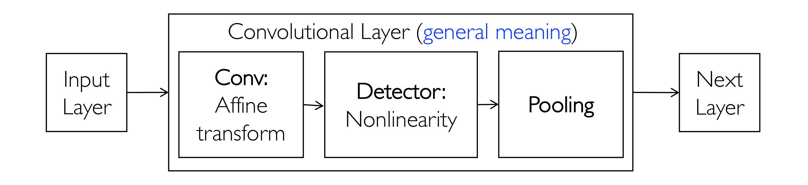

深度学习¶
Deep learning is algorithms that model high-level abstractions in data using architectures consisting of multiple nonlinear transformations.
传统的人工设计模式在大规模数据面前并不可取（“有多少智能，就有多少人工”），同时有很多的特征模式是一种隐含的表达，并不能清晰列举。
多层感知机¶
感知器¶
感知器结构¶
g 为非线性激活函数，括号中为输入的线性组合加偏置。
异或问题¶
感知器可以代表常规的与或非布尔函数。
但对于异或函数却无法表示。
多层感知机¶
为解决异或问题的缺陷引入多层感知机作为感知器的组合。
此时，多层感知机可以表示任意一种布尔函数。
注：多层感知机的连接可能是稀疏的，这与人脑中的结构有类似之处。
激活函数¶
通过激活函数的方式添加非线性性。
sigmoid 函数¶
双曲正切函数¶
ReLU 函数¶
三种激活函数比较¶

softmax 函数¶
将一层的输出映射到 [0, 1] 之间，并且归一：\sum \limits_{j = 1}^k \hat y_j = 1。
注：“赢者通吃”。
注：为保障数值稳定性避免上溢，在实际计算时常常转换为
g(\boldsymbol z)_i = \frac{e^{z_i - z_m}}{\sum \limits_{j = 1}^k e^{z_j - z_m}}, m = \arg \max(z_j)
损失函数¶
MSE¶
在输出是具体数值的问题时常使用。
交叉熵¶
在输出是分类问题（标签是独热编码）时常使用。
交叉熵的推导可以从两种视角得到。
信息论视角
信息量：
I(q_j) = -\log p(q_j)信息熵：
H(q) = -\sum \limits_{j = 1}^k q_j \log q_j对随机变量的信息量求期望，描述用于编码 q 的信息（不确定性）所需要的比特数。
相对熵（KL 散度）
\begin{align} \text{KL}(q \lvert \rvert p) &= - \sum \limits_{j = 1}^k q_j \log(\frac{p_j}{q_j}) \\ &= - \sum \limits_{j = 1}^k q_j \log p_j - H(q) \end{align}描述已知分布 q，描述分布 p 所需要的比特数。
交叉熵
注意到 KL 散度中 H(q) 与 p 无关，去除该部分得到交叉熵：
H(q, p) = - \sum \limits_{j = 1}^k q_j \log p_j统计学视角
考虑最大似然估计。
在逻辑回归中，有条件概率：
P(y = 1 | \boldsymbol x, \boldsymbol w) = \sigma(\boldsymbol w^T \boldsymbol x) = \frac{1}{1 + \exp(-\boldsymbol w^T \boldsymbol x)}极大化似然函数：
\max \limits_{\boldsymbol w} \prod \limits_{i = 1}^k \prod \limits_{c = 0}^1 P(y = c | \boldsymbol x_i, \boldsymbol w)^{1[y_i = c]}取对数，则问题等价于：
\min \limits_{\boldsymbol w} - \frac 1 n \sum \limits_{i = 1}^n \sum \limits_{c = 0}^1 \{1[y_i = c] \cdot \log [P(y = c | \boldsymbol x_i)] \}拆开可得到交叉熵的形式。
基于梯度的训练¶
优化目标（Structural Risk Minimization）：
for t <- 1 to T:
FowardPropagation();
BackwardPropagation();
UpdateParam();
梯度下降：
反向传播¶
利用链式法则计算每层中参数 \theta 的梯度：
使用类似动态规划填表的方式可以进行计算。
梯度下降¶
批量梯度下降算法¶
每次处理全部样本。
随机梯度下降算法¶
每次处理一个样本。
小批量梯度下降算法¶
每次处理小批量的样本。
卷积神经网络¶
卷积神经网络¶
全连接网络的不足：连接权重过多，既影响训练速度也影响使用速度。
回到人类认知图像的方式：通过感受野来激活特定的神经元进行认知。
依次为基础，卷积神经网络还吸纳了几个重要的思想：
- Idea 1：局部连接（或稀疏连接、稀疏交互）
Locality Assumption：局部的信息足够用于识别。

这种做法有利于减少需要存储的参数，减少模型的存储需求，提高其统计效率。
- Idea 2：参数共享
在多个函数中，可以使用相同的参数。
卷积神经网络的层级结构：
卷积¶

卷积核可以人为设定步长、填充。
对于一个 w \times h \times c 的输入图像，使用 k \times k \times c \times d，填充为 \text{pad}，步长为 \text{stride} 的卷积核可以得到
的输出。
卷积神经网络是由卷积层的堆积，中间夹杂着激活函数。
池化¶
最大池化与平均池化。
- 池化可用于 减少卷积层对于位置的多余敏感性。
注：局部平移不变性。
当我们只关心一个特征是否出现，而不是特别关心其位置时，局部平移不变性成为一个很有用的特征。
此时，引入池化相当于加入了无限强的先验，使得模型具有局部平移不变性。
- 池化可用于减少图像的大小。
典型网络结构¶

LeNet¶
用于手写数字识别问题。

VGG-16¶

以小的卷积核堆积替代大卷积核。
梯度消失问题¶
当神经网络层数增多之后，反向传播回来到浅层时，由于累乘的性质梯度有可能会很小，造成训练困难和准确率下降，构成梯度消失问题。
一种解决方式是使用 ReLU 激活函数（避免 sigmoid 函数中导数 \frac{\partial \sigma}{\partial x} = \sigma(1 - \sigma) 较小）。
更为有效的办法是使用其它的网络结构。
GoogLeNet¶

辅助分类器¶
类比于“高楼供水系统”，引入多个辅助分类器避免深层传播的梯度消失。
inception 模块¶
改变原先一层中只有单个大小的感受野的模式，在一层中引入多个尺寸的卷积核并拼接结果。为了避免参数数量大规模增多，需要引入一定技巧降维。

ResNet¶
一般的深层网络在训练集和测试集上效果均不佳，但这在直觉上并不合理。如果浅层神经网络可以取得较好的效果，且后续的网络层全部是恒等映射，在理应取得相同的效果。
因此，问题在于深层网络不易优化。
由于拟合残差相比于拟合恒等映射更为容易，因此考虑引入残差训练。
过拟合问题¶
正则项¶
L1 正则项¶
加入正则项：
在正则项系数较大时可以获得稀疏解，可以起到特征选择的作用。

L2 正则项¶
加入正则项：
不能得到稀疏解，但可以得到近似系数解。
Dropout¶
在训练过程中随机临时丢弃部分神经元。
注：Dropout 可以被视作集成了大量深层神经网络的使用 Bagging 方法，同时还有参数共享的优点。
数据增强¶
对于图像相关问题，可以考虑翻转、裁剪、缩放等方法。
对于语音相关问题，可以考虑注入噪声等方法。
例：《四库全书》数字化，对于汉字进行非线性变换进行数据增强。
词向量¶
词向量¶
对于一个词，最简单的向量表示是独热编码（只有一个元素是1，其余均为0）。
这种编码方式尽管较为简单，但编码太长、且无法度量出词之间的相似性。
因此，我们希望通过嵌入的方式将高维向量映射都低位空间中的特征中。
神经网络语言模型¶
考虑一个 n 元语言模型，第 i 个词是 w_i 的概率为：
其神经网络模型即为：

词向量可以在训练网络的同时得到。
问题：
- 输入层有 m(n - 1) 个输入，全连接接入是参数较多。
- 输出层神经元个数等于词表长度 K。
word2vec¶
CBOW¶
针对 NNLM 的两个缺点，CBOW 模型进行了如下的改进。

- 利用加和避免了冗长的拼接带来的巨大参数量。
- 利用霍夫曼树压缩编码长度，避免输出层与词表长度相等。
输出的第 i 为在第 i 个节点选择左右的概率，具体的：
Text-CNN¶
将文本词向量排列得到一个二维矩阵。利用多个卷积核在矩阵上进行卷积、最大池化并拼接后得到一个特征向量。利用全连接层连接到分类输出中。
循环神经网络¶
RNN¶
Motivation：对于序列建模。
在 RNN 中，模型使用了两个重要的思想：
- Idea 1：局部依赖
过去时刻的时序信息可以被一个编码的隐藏信息代表。
- Idea 2：参数共享
在 t - 1 时刻有用的参数在 t 时刻也有用。

其中：
典型结构¶

双向 RNN¶
普通的 RNN 结构隐藏了一个“因果”关系，即“因为过去，所以现在”。但事实上，在许多应用中，需要输出的预测 \boldsymbol y_t 可能依赖于整个序列。
编码-解码序列到序列结构¶
长短期记忆网络¶
长期依赖问题¶
类似于深度神经网络中的梯度爆炸与消失问题，同样的原理出现在 RNN 中。
在一个简化的 case 中，我们假定一个简单的循环为：
对 W 进行正交分解，得到：
而随着时间的推移，可以得到
模数小于1的特征值会衰减到0，而大于1的会激增。
在 RNN 的特定问题中，长期的依赖可能会消失。
LSTM¶
遗忘门、输入门、输入处理单元、输出门。